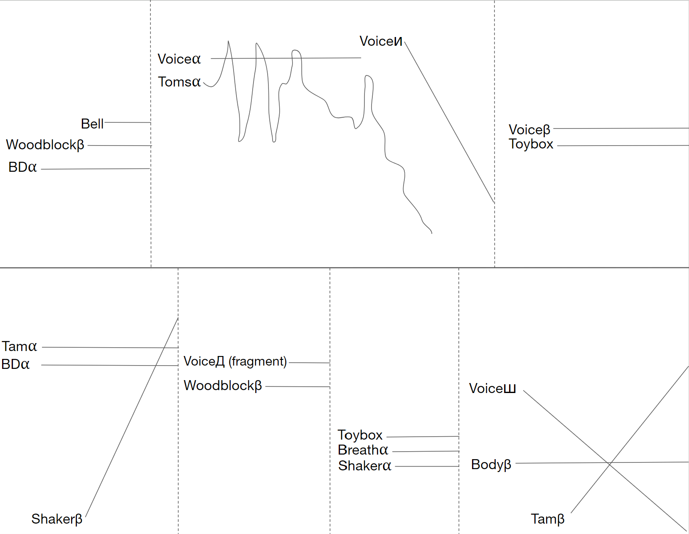

Multi Percussion Solo | ~6' | 2023
Revolution 10 was directly inspired by John Lennon's Revolution 9. Like Lennon's piece, it has many cuts-represented by vertical dotted lines. These cuts highlight multi percussion's lets a single player switch between many vastly different soundscapes.
This piece is currently unpublished. Please email jcr101402@gmail.com with any questions.